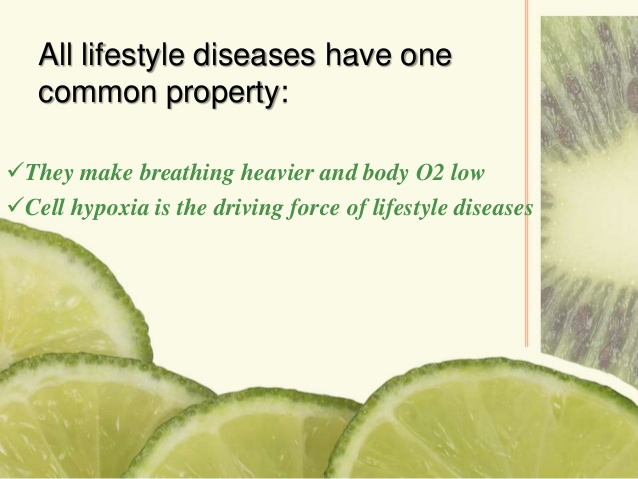
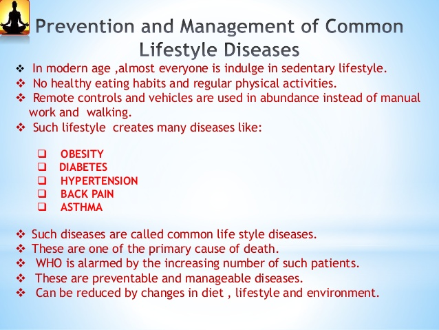

Prevention and management of common lifestyle desease
Lifestyle disease is an umbrella term given to all the diseases which arise because of unhealthy lifestyle. The most common
Lifestyle diseases include Hypertension, Diabetes, Arthritis, Obesity, Insomnia etc which are the major cause of mortality in
today’s world. Not only are these lifestyle diseases thwarting, but these are also interfering with natural comfort of wellbeing.
Lifestyle disorders were more common in western world but the scenario has changed dramatically. Developing countries like India
is predicted to have most number of Lifestyle related patients in the next 10 years in the entire world.

Why Lifestyle Diseases are on the Rise?
If we consider why lifestyle diseases are increasing manifold across the world, the most accurate thought would be that we lead a hectic
lifestyle with lack of daily routine. Also, wrong eating habits, craving for unhealthy food and irregular sleep pattern are the major reasons
for these conditions. Stress and lack of physical exercise further aggravates such condition.

Yoga Support for Lifestyle Diseases
Yoga which is rightly considered as sister concern of Ayurveda has an important role in developing harmony between mind and body.
Understanding how the body feels and undertaking the right breathing techniques are important tool to fight stress and anxiety to lead a
better quality of life.
Lifestyle Disease Management with Ayurveda and Yoga
As Ayurveda focuses on preventive healthcare, it strongly suggests that once the disease factors are identified they are to be avoided.
This is followed by Panchakarma or Bio-purification along with external therapies, diet and lifestyle modifications and taking to herbal
medicines to balance the Tridoshas. Taking to detoxification by Panchakarma Ayurvedic treatments relieves many common and lifestyle
diseases like obesity, Stress, insomnia, migraine, sinusitis, anaemia, anxiety/depression, cholesterol disorders, hypertension, sciatica,
diabetes, paralysis, Osteo arthritis and rheumatoid arthritis, neck and back pain.
BACK